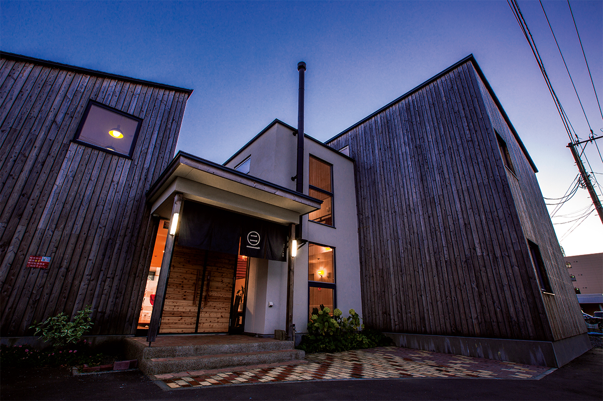
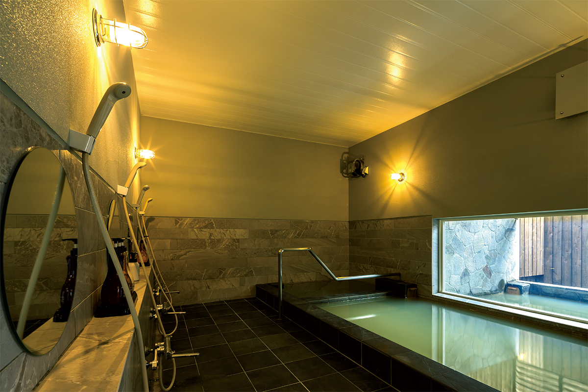
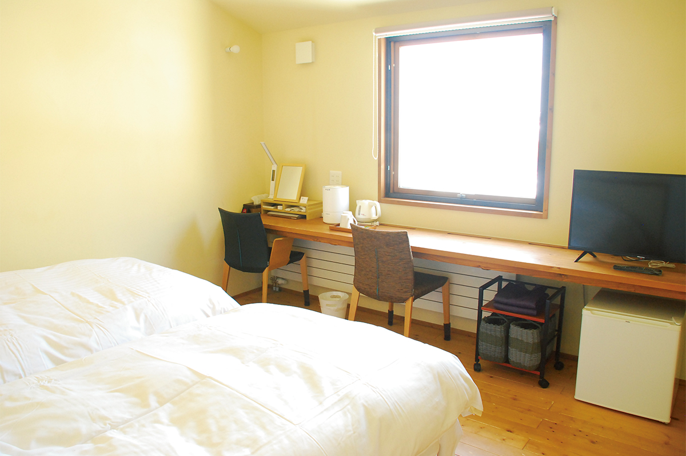
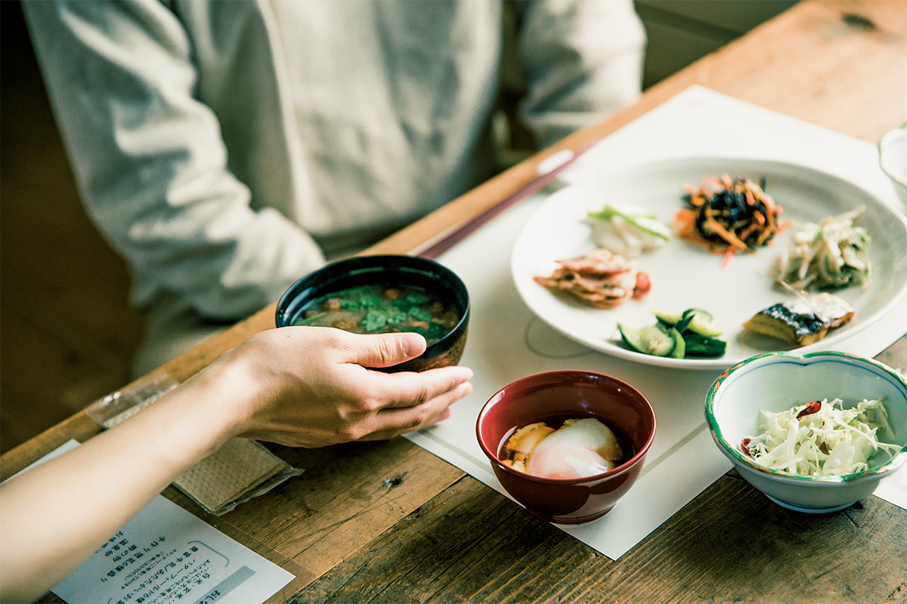

Префектура Хоккайдо · Тоётоми · онсэн-рёкан
Рёкан «Кавасима» в онсэне Тоётоми: горячая вода с маслянистой плёнкой на севере Хоккайдо

Когда силы на исходе и хочется, чтобы тебя просто пожалели, исследовательница онсэнов советует ехать не за бодрящей, а за успокаивающей водой. Один из таких адресов находится на севере Хоккайдо: рёкан «Кавасима» в онсэне Тоётоми, где по поверхности воды плавают капли природного масла.
Онсэн
Вода, похожая на заправку для салата
Такой ванны почти нигде больше не встретишь. На поверхности горячей воды покачиваются маслянистые капли, и купальня становится похожа на заправку для салата. Когда-то здесь бурили землю в поисках нефти, и вместе с природным газом из скважины ударила горячая вода. Газ нашли куда применить отдельно, а источник с примесью масел используют как есть.
Масло оседает на коже, и после купания она блестит. Онсэн Тоётоми стал спасением для людей с кожными проблемами: сюда едут лечить кожу водой, и онсэн превратился в Мекку для такого лечения. Вода хлоридно-натриевая, с йодом, и пахнет нефтью, а у самих масел запах древесный, как у японского кипарисовика хиба. Соль и масла покрывают кожу тонкой плёнкой и надолго удерживают влагу, поэтому эта вода особенно хороша для сухой кожи.

В большой бане три купальни: крытая с чуть подогретой водой, купальня с водой прямо из источника при 35 градусах и полуоткрытая, где вода погорячее. По поверхности везде плавают капли масла. Если переходить из одной купальни в другую, тело прогревается до самой глубины, и пот выступает градом.
Рёкан
Дерево, простота и долгие постои

Рёкан «Кавасима» построен в спокойном современном стиле из природных материалов. Его любят и те, кто приезжает ради онсэна, и путешественники, которые хотят увидеть равнину Саробэцу.
Зимой 2027 года рёкан не принимает постояльцев: с 3 января до середины января закрыто всё, а с середины января до конца марта работают только дневная баня и лавка. С апреля 2027 года рёкан планирует работать как обычно.
Кухня
Рис с маслом из морских ежей
Ужин готовит сам хозяин рёкана. На столе морепродукты из Вакканая, овощи и дичь из Тоётоми.

Особенно запоминается фирменное ароматное сливочное масло рёкана. Его делают из молока Тоётоми и продуктов Хоккайдо: с морским ежом, с хлопьями вяленого лосося, с ламинарией с острова Рисири. Ложку такого масла кладут на горячий рис и сбрызгивают соевым соусом, и этот рис потом долго вспоминаешь. В 2022 году ночь с ужином и завтраком стоила от 17 600 иен с налогом и платой за обслуживание.
Рёкан «Кавасима»
- Адрес
- префектура Хоккайдо, уезд Тэсио, Тоётоми, Онсэн
- Телефон
- +81 162-82-1248
- Цены / Вход
- ночь с ужином и завтраком от 17 600 иен с налогом и платой за обслуживание
- Заезд / выезд
- 15:00 / 10:00
- Часы работы
- дневное купание 13:00–20:00 (вход до 19:30)
- Выходные
- нерегулярно
- Как добраться
- от станции JR Тоётоми около 7 минут на машине; от съезда Румои-Оова скоростной дороги Фукагава-Румои около 2 часов 40 минут на машине